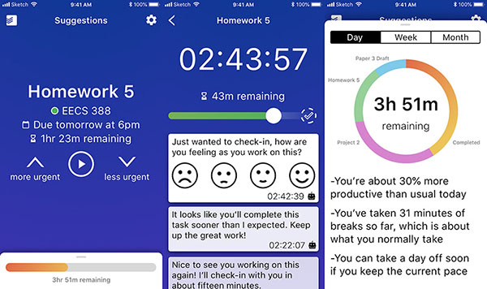

Background
When I took ENTR 390 – Digital Product Design in the Fall of 2018, I used Sketch to create wireframes for a concept app that I turned in as my final project. Please see the links at the bottom of the page for more information.
Screenshots
